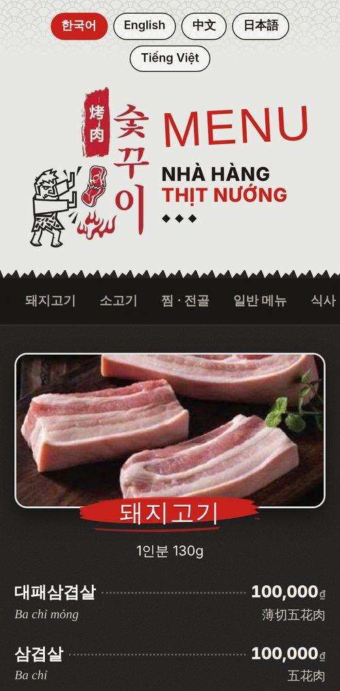
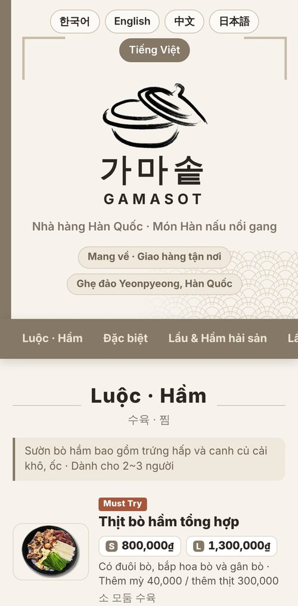
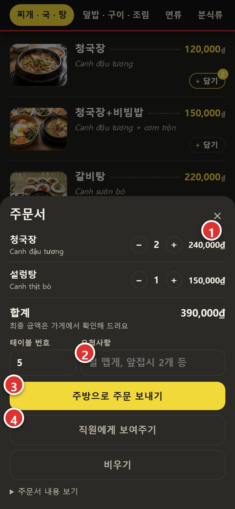
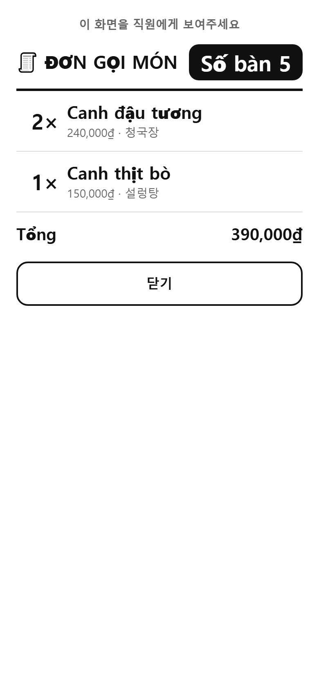

QR MENU ASIA
베트남 식당의 메뉴판을
스마트폰 속으로
옮기는 회사
5개 언어 QR 메뉴판 · 사장님 수정 화면 · 주방 주문
투자 제안서



147곳만든 메뉴판 (5주)
5개 언어한·베·영·중·일 자동 전환
10억 동투자 희망 금액 (약 5,400만 원)
2026년 11월 · 대외비 (투자 검토용)
5개 언어 QR 메뉴판 · 사장님 수정 화면 · 주방 주문
투자 제안서


2026년 11월 · 대외비 (투자 검토용)
숫자는 두 종류입니다. 실적(이미 한 것)은 저희 작업 기록에서 확인한 숫자이고, 계획(앞으로 할 것)은 15~17쪽에 적은 가정으로 계산한 숫자입니다. 시장 숫자는 출처를 쪽 아래에 적었습니다. 금액 단위는 베트남 동(VND)이며, 원화는 1원 ≈ 18.5동으로 어림해 괄호에 적었습니다.
외국인 손님이 많은 베트남 식당에, 손님 휴대폰 언어로 자동으로 바뀌는 QR 메뉴판과 운영 도구를 월 구독으로 제공합니다.
한국·중국·일본·서양 손님이 메뉴를 못 읽어 주문이 느리고 실수가 납니다. 종이 메뉴판은 가격이 바뀔 때마다 다시 인쇄해야 합니다.
테이블 QR을 찍으면 앱 설치 없이 5개 언어 메뉴판이 열립니다. 사장님은 휴대폰으로 가격·품절·사진을 1분 안에 바꿉니다.
2026년 10월 14일 첫 메뉴판 후 5주 만에 147곳(하노이 81·박닌 63 등)을 만들었습니다. 주방 주문·단골 도장은 첫 가게에서 운영을 시작했습니다.
제작비(200만~400만 동, 1회) + 월 관리비 30만 동(반복 매출) + 옵션(주문서·도메인). 가게가 늘수록 매달 들어오는 돈이 쌓입니다.
지분 투자 10억 동. 투자금은 영업 인력(1년)·마케팅·법인 운영에 씁니다. 지분율은 기업가치 협의로 정하며 19쪽에 예시를 넣었습니다. 매달 간단 실적과 분기 재무를 보고하고, 투자자는 매출·가게 수를 관리 화면에서 직접 볼 수 있습니다.
베트남에는 외국인 손님이 빠르게 늘고 있지만, 식당의 메뉴판은 여전히 종이 한 장입니다.
베트남어·한국어로만 된 메뉴판 앞에서 외국 손님은 손가락으로 사진을 가리키거나 번역 앱을 켭니다. 주문이 늦고, 잘 모르는 비싼 메뉴는 아예 시키지 않습니다.
재료값이 오르면 가격을 바꿔야 하는데, 메뉴북을 다시 만들기엔 돈과 시간이 듭니다. 그래서 펜으로 고치거나 오래된 가격을 그대로 둡니다.
주문을 잘못 알아들어 다른 음식이 나오고, 다시 만들고, 손님은 불만을 구글 리뷰에 남깁니다.
어떤 메뉴가 잘 팔리는지, 어느 나라 손님이 오는지, 몇 시가 바쁜지 감으로만 압니다. 단골을 관리할 도구도 없습니다.
저희가 147곳의 메뉴판을 만들며 구글 지도에 올라온 메뉴판 사진을 직접 읽어 보니, 같은 가게인데 사진마다 가격이 다른 경우, 몇 년 전 가격이 그대로 걸린 경우, 메뉴 이름이 한 언어로만 된 경우가 매우 흔했습니다. 손님이 가게에 오기 전에 볼 수 있는 정확한 메뉴판이 없다는 뜻입니다.
메뉴판 사진만 보내 주시면, 가게 분위기에 맞춘 5개 언어 QR 메뉴판과 운영 도구를 한 번에 만들어 드립니다.
손님 휴대폰 언어를 읽어 한국어·베트남어·영어·중국어·일본어 중 하나로 바로 엽니다.
카메라로 QR을 찍으면 끝. 아이폰·안드로이드 모두 됩니다.
가격·품절·사진·영업시간을 휴대폰에서 고치면 약 1분 안에 손님 화면에 반영됩니다.
손님이 담은 음식을 직원 언어로 크게 보여 주거나 주방 화면·영수증 프린터로 바로 보냅니다.
방문 리포트(나라·언어·기기), 매출 달력, 잘 팔린 음식, 바쁜 시간을 한눈에.
단골 도장과 손님 소리함으로 다시 오게 하고, 불만은 구글 리뷰 전에 먼저 듣습니다.
메뉴판은 가게가 문을 여는 날마다 쓰입니다. 한 번 테이블에 QR을 붙이면 다른 회사로 바꾸기 어렵고(카드 재인쇄·직원 교육), 그래서 월 구독이 오래 유지될 것으로 봅니다.
실제 운영 중인 메뉴판입니다. 가게마다 간판과 메뉴판을 닮게 디자인합니다.




아래 줄 화면은 시험용 가게 데이터로 찍은 예시입니다.
메뉴판에서 끝나지 않습니다. 식당 운영에 필요한 도구가 하나로 이어집니다.


| 기능 | 지금 상태 |
|---|---|
| 5개 언어 메뉴판 · QR 카드 · SNS 홍보 이미지 | 운영 중 (147곳) |
| 사장님 수정(가격·품절·사진·영업시간) · 방문 리포트 | 운영 중 |
| 장바구니 · 주문서 · Zalo 주문 | 운영 중 (계약 가게) |
| 주방 주문 화면 · 단골 도장 · 손님 소리함 | 첫 가게(진미식당) 운영 시작 · 2026-11-18 |
| 직원 호출 · 테이블 배치도 · 매출 달력 · 영수증 프린터 | 개발 완료 · 실제 가게 시험 중 |
| 가게 찾기 사이트(qrmenuasia.com) · 구글 검색 노출 | 운영 중 |
위 화면은 시험용 가게 데이터로 찍은 예시입니다. 사장님용 안내서(한국어·베트남어 각 56쪽)도 이미 만들어 두었습니다.
식당은 많고, 외국인 손님은 역대 최고이며, 가게들은 비용을 줄일 방법을 찾고 있습니다.
2025년 외국인 방문객은 약 2,120만 명으로 역대 최고였고, 중국(530만)·한국(430만)이 1·2위입니다. 메뉴판 언어가 매출과 바로 이어집니다.
박닌은 한국이 가장 큰 외국인 투자자인 곳이고, 삼성 직원만 4만 5천여 명이 일합니다. 한국 손님을 받는 식당이 모여 있어 저희의 첫 시장이 되었습니다.
2025년 상반기 비용 부담 등으로 5만 곳 넘는 음식점이 문을 닫았습니다. 인쇄비·주문 실수·인건비를 줄이는 도구가 필요합니다.
베트남 음식점·카페의 1%(약 3,300곳)만 월 관리를 쓰셔도 반복 매출이 연 약 107억 동(월 27만 동 기준)입니다.
출처: 음식점 수 — iPOS.vn 2025 베트남 F&B 시장 보고서(VIR·Vietstock 보도, 2026-04, 표본 조사 추정치) · 상반기 폐업 — iPOS·네슬레 상반기 보고서(SGGP, 2025) · 방문객 — 베트남 통계(Vietnam News·VietnamNet, 2026-01) · 박닌 투자·삼성 직원 수 — Vietnam News·The Investor(2026). 시장 크기 어림은 저희 계산입니다.
자본 없이, 혼자서, AI 팀과 함께 5주 동안 만든 결과입니다.
박닌 고깃집 숯꾸이: 5개 언어, 휴대폰 언어 자동 감지, 테이블 QR 카드.
사장님 의뢰 가게(호텔·치킨집·쌀국수집 등) 제작, 방문 기록·관리 화면·사장님 수정 화면 완성.
모든 가게를 같은 구조(표준 틀)로 만들고, 메뉴 읽기·번역·디자인·검수 담당 AI를 나눠 제작 속도를 높임.
주방 주문 화면·영수증 프린터·매출 달력·단골 도장·손님 소리함, 사장님 안내서(한·베 각 56쪽).
qrmenuasia.com에서 147곳을 지역·종류별로 검색. 가게 하나하나가 영업용 견본이 됩니다.
147곳 대부분은 먼저 만들어 보여 드리는 영업용 견본(가게 찾기용)이고, 돈을 받는 정식 계약 가게는 아직 일부입니다. 이 투자는 이미 만든 견본을 유료 계약으로 바꾸는 영업 조직을 세우기 위한 것입니다.
메뉴판 사진 읽기·5개 언어 번역·디자인·검수를 AI 담당이 나눠 맡습니다. 그래서 사람 한 명이 5주 동안 147곳의 다국어 메뉴판을 만들 수 있었습니다.
계약 전에 그 가게의 진짜 메뉴판을 만들어 휴대폰으로 보여 드립니다. 설명서가 아니라 완성품을 보는 사장님은 결정이 빠릅니다.
틀은 같지만 색·장식·제목은 그 가게 간판과 메뉴판을 닮게 바꿉니다. 고깃집은 칠판과 붓글씨, 바는 금색과 네온처럼.
한국 손님이 원하는 것과 베트남 직원이 읽어야 하는 것을 함께 압니다. 주문서는 직원 언어로 크게, 손님 언어로 작게 보여 줍니다.
메뉴판, 사장님 수정, 주방 주문, 영수증, 매출, 단골까지 한 회사 도구로 이어집니다. 쓸수록 가게가 떠나기 어렵습니다.
모든 가게가 qrmenuasia.com과 구글 검색에 함께 나옵니다. 가게가 늘수록 사이트가 커지고, 사이트가 커질수록 가게에 손님이 갑니다.
7. 기기·설치비 0: 손님 휴대폰과 사장님 휴대폰만 있으면 됩니다. 주방 화면도 집에 있는 안드로이드 태블릿이나 PC로 됩니다.
사장님이 지금 고를 수 있는 방법들과 나란히 놓아 보면, 저희 자리가 분명합니다.
| 종이 메뉴판 | PDF·사진을 QR로 연결 | POS 회사 주문 시스템 | QR MENU ASIA | |
|---|---|---|---|---|
| 5개 언어 자동 | ✕ | ✕ (파일 하나) | △ (대부분 베·영) | ◎ 휴대폰 언어로 자동 |
| 가격 바꾸기 | 재인쇄 | 파일 다시 만들기 | ○ | ◎ 휴대폰으로 1분 |
| 가게 맞춤 디자인 | ○ | ○ | ✕ 같은 틀 | ◎ 간판·메뉴판 닮게 |
| 초기 비용 | 인쇄비 | 거의 없음 | 기기·설치 | 200만 동부터 |
| 제작 수고 | 사장님 | 사장님 | 사장님 입력 | ◎ 사진만 보내면 끝 |
| 주문·주방 연결 | ✕ | ✕ | ◎ | ○ 기본 기기로 가능 |
| 손님 숫자·단골 | ✕ | ✕ | ○ | ○ 나라·언어별 방문 |
| 새 손님 데려오기 | ✕ | ✕ | ✕ | ◎ 가게 찾기 사이트 |
◎ 아주 좋음 · ○ 됨 · △ 일부 · ✕ 안 됨 — 일반적인 경우를 저희가 정리한 것입니다.
POS 회사는 계산대와 주문이 중심이고, 외국인 손님을 위한 다국어 메뉴판과 가게 맞춤 디자인은 약합니다. 저희는 "외국인 손님이 오는 식당"에 집중해 메뉴판부터 들어가고, 필요하면 주문·주방까지 넓힙니다. POS와는 경쟁보다 함께 쓰는 관계가 될 수 있습니다.
한 번 받는 제작비로 원가를 메우고, 매달 받는 관리비로 회사가 자랍니다.
| 상품 | 내용 | 가격 (VND) |
|---|---|---|
| 기본형 (1회) | 5개 언어 메뉴판, 기존 사진·로고 활용, QR 카드 PDF, SNS 이미지 2종 | 2,000,000 |
| 프리미엄 (1회) | 기본형 + 가게 맞춤 디자인, 음식 사진 정리, 시안 수정, SNS 홍보영상 2회 | 4,000,000 |
| 월 관리 (매달) | 사이트 유지, 사장님 수정 화면, 방문 리포트, 맡기는 수정 월 2회 | 300,000 / 월 |
| 연 결제 | 월 관리 12개월 (2개월 무료) | 3,000,000 / 년 |
| 옵션: 장바구니·주문서 | 손님 주문서, 직원에게 보여주기, Zalo 주문 | + 2,500,000 |
| 옵션: 전용 도메인 | 예: 가게이름.vn | 연 500,000부터 |
| 옵션: 테이블 주문 시스템 | 주방 화면·영수증 프린터·직원 호출 | 별도 상담 |
지금 소개 사이트(qrmenuasia.com)에 공개한 가격 그대로입니다. 원화로는 기본형 약 11만 원, 월 관리 약 1만 6천 원입니다.
주방 화면·프린터·매출을 켠 가게에 월 요금을 더 받습니다.
가게 찾기 사이트 위쪽 자리, 추천 배지를 유료로 팝니다.
프린터·QR 스탠드·배달·결제 회사와 묶음 판매 수수료.
계약 가게 한 곳이 회사에 얼마를 벌어 주고, 얻는 데 얼마가 드는지 계산했습니다.
| 제작비 평균 (기본형 7 : 프리미엄 3) | 2,600,000 |
| 옵션 평균 (주문서·도메인) | 400,000 |
| 월 관리 평균 (연결제 할인 포함) | 270,000 / 월 |
| 첫해 매출 | 6,240,000 |
| 평균 이용 기간 (월 해지 2% 가정) | 약 50개월 |
| 가게 한 곳 평생 매출 | 약 16,500,000 |
| 영업 인건비 + 마케팅 ÷ 새 계약 (1년차) | 약 3,400,000 |
| 영업 수당 (제작비의 10%) | 260,000 |
| QR 카드·스탠드 인쇄 | 150,000 |
| 가게 한 곳 얻는 비용 | 약 3,800,000 |
| 서버 비용 | 약 5,000 / 월 |
왜 가능한가: 메뉴판 제작을 AI 팀이 맡아 제작 원가가 거의 들지 않고, 사이트는 가게가 늘어도 서버비가 아주 작습니다. 돈은 대부분 영업에 들어가고, 그래서 이번 투자금도 영업 조직에 씁니다.
모든 숫자는 계획 가정입니다(15쪽 가정표와 같음). 얻는 비용에 대표·관리 급여와 세금은 넣지 않았습니다. 실제 해지율·옵션 판매율은 첫 6개월 실적으로 다시 맞춥니다.
이미 만든 147곳의 견본이 저희의 가장 큰 영업 자산입니다.
한국 손님이 많은 한식당·고깃집·바부터. 견본 144곳(하노이 81·박닌 63)과 그 주변 새 가게를 합쳐 한 달에 약 100곳을 만나고, 그중 10곳(약 10%)을 계약합니다. 한국어·베트남어 영업 직원 각 1명.
호찌민·다낭·나트랑·푸꾸옥 등 외국인 관광객이 많은 도시. 중국·서양 손님 식당까지 넓히고 지역 영업 파트너를 둡니다.
계약 가게가 다른 가게를 소개하면 월 관리 1개월 무료. 한인회·상인 모임·식자재 업체와 제휴합니다.
가게마다 만든 SNS 홍보 이미지·영상, 가게 찾기 사이트의 구글 검색, Zalo·페이스북·카카오톡 상담.
매달 새 계약 10곳 → 1년 뒤 구독 가게 약 108곳. 영업 직원 2명이 한 달에 각각 약 50곳(하루 2~3곳)을 만나 5곳씩 계약하면 되는 숫자입니다(계약률 약 10%).
세 가지 시나리오로 계산했습니다. 차이는 "한 달에 새로 계약하는 가게 수" 하나뿐입니다.
| 새 계약 (매달) | 1년차 | 2년차 | 3년차 |
|---|---|---|---|
| 보수 (천천히) | 6곳 | 15곳 | 30곳 |
| 기본 (목표) | 10곳 | 25곳 | 50곳 |
| 공격 (빠르게) | 15곳 | 40곳 | 80곳 |
| 제작비 평균 | 2,600,000 동 | 기본형 7 : 프리미엄 3 |
| 옵션 평균 | 400,000 동 | 새 가게당 |
| 월 관리 평균 | 270,000 동 | 연결제 할인 포함 |
| 해지율 | 매달 2% | 1년에 약 22% 해지 |
| 영업 직원 급여 | 12,000,000 동/월 | + 계약 수당 10% |
| 제작·고객지원 급여 | 11,000,000 동/월 | |
| 관리(회계·운영) 급여 | 14,000,000 동/월 | 2년차부터 |
| 대표 급여 | 1,000만 → 2,000만 동/월 | 1→3년차 |
| 사무실 | 500만 → 2,000만 동/월 | 공유 사무실부터 |
| 마케팅 | 1,000만 → 4,000만 동/월 | |
| AI 도구·서버·도메인 | 500만 → 1,200만 동/월 | + 가게당 5,000 동/월 |
| 인원 | 1년차 | 2년차 | 3년차 |
|---|---|---|---|
| 영업 | 2 | 3 | 5 |
| 제작·고객지원 | 1 | 2 | 3 |
| 관리 | 0 | 1 | 1 |
| 대표 포함 합계 | 4명 | 7명 | 10명 |
구독 가게가 쌓이면서 3년차에는 매출의 절반 이상이 매달 들어오는 반복 매출이 됩니다.
| 기본 시나리오 (억 동) | 1년차 | 2년차 | 3년차 |
|---|---|---|---|
| 연말 구독 가게 | 108곳 | 354곳 | 816곳 |
| 총매출 | 5.56 | 16.96 | 37.87 |
| 그중 월 관리 매출 | 1.96 | 7.96 | 19.87 |
| 총비용 | 8.33 | 16.38 | 26.71 |
| 영업이익 | −2.77 | +0.59 | +11.16 |
| 영업이익률 | −50% | 3% | 29% |
18개월째부터 월 흑자, 돈이 가장 많이 나가 있는 순간도 약 3.5억 동입니다. 투자금 10억 동이면 기본 시나리오를 충분히 버티고, 남는 돈으로 2단계 지역 확장을 앞당길 수 있습니다. 3년차 말에는 월 관리 매출만 매달 약 2.2억 동(연 26억 동)입니다.
세금·환율 변동은 넣지 않았습니다. 법인세 등은 법인 설립 후 회계사와 다시 계산합니다. 법인 설립·자문 비용은 투자금 사용표(18쪽)에만 넣었습니다.
좋을 때와 나쁠 때를 모두 보여 드립니다.
| (억 동) | 보수 | 기본 | 공격 |
|---|---|---|---|
| 3년차 말 구독 가게 | 489곳 | 816곳 | 1,298곳 |
| 1년차 매출 | 3.34 | 5.56 | 8.34 |
| 2년차 매출 | 10.18 | 16.96 | 26.83 |
| 3년차 매출 | 22.72 | 37.87 | 60.34 |
| 1년차 영업이익 | −4.78 | −2.77 | −0.25 |
| 2년차 영업이익 | −5.65 | +0.59 | +9.64 |
| 3년차 영업이익 | −2.86 | +11.16 | +31.94 |
| 월 흑자 시작 | 35개월째 | 18개월째 | 7개월째 |
| 3년차 말 월 반복 매출 | 1.32 | 2.20 | 3.51 |
| 3년 누적 손익 | −13.3 | +9.0 | +41.3 |
보수 시나리오를 계획 그대로 두면 3년 동안 약 13.4억 동이 필요해 투자금(10억 동)을 넘습니다. 그래서 6개월마다 계획을 점검하고, 새 계약이 기본 시나리오의 60%보다 낮으면 ① 2년차 채용을 미루고 ② 지역 확장을 늦추고 ③ 사무실·마케팅을 줄여 10억 동 안에서 운영을 다시 맞춥니다. 이 경우에도 이미 받은 월 관리비는 매달 계속 들어옵니다.
가게 찾기용 견본을 하루 여러 곳 만들 수 있는 AI 제작 체계가 이미 있으므로, 영업 직원 수가 곧 성장 속도입니다. 1년차 실적이 좋으면 추가 투자로 영업 인원을 빠르게 늘립니다.
투자금의 약 44%를 매출을 직접 만드는 영업·마케팅에, 약 13%를 제작·고객지원에 씁니다.
| 쓰는 곳 | 내용 | 금액 (동) |
|---|---|---|
| 인력 (1년) | 영업 2명(한국어·베트남어) + 제작·고객지원 1명 | 420,000,000 |
| 마케팅·영업 도구 | QR 스탠드 견본, 무료 체험 카드 인쇄, 온라인 광고, 소개 제도 | 150,000,000 |
| 대표 급여 (1년) | 월 1,000만 동 — 전업으로 사업에 집중 | 120,000,000 |
| 법인·사무실 | 법인 설립·회계·법률 자문, 공유 사무실 1년 | 100,000,000 |
| 기술·서버 | AI 도구 구독, 서버·도메인, 테스트용 프린터·태블릿 | 60,000,000 |
| 예비비 | 계획보다 느릴 때 버티는 돈 (6개월 점검 후 사용) | 150,000,000 |
| 합계 | 1,000,000,000 |
법인 설립 · 영업 2명 채용 · 계약 가게 50곳 이상 · 주방 주문 쓰는 가게 10곳 이상 · 월 관리 매출 월 1,000만 동 이상.
구독 가게 100곳 이상 · 박닌·하노이 견본 전부 방문 · 2단계 도시 1곳 시작 준비 · 다음 투자 여부 판단.
지분 투자입니다. 투자자는 회사의 주인 중 한 명이 되어 성장의 몫을 함께 가져갑니다.
| 항목 | 제안 |
|---|---|
| 투자 금액 | 10억 동 (약 5,400만 원) — 한 분 또는 여러 분이 나눠서 |
| 방식 | 신설 법인의 지분(회사 몫) 취득 |
| 지분율 | 투자 전 기업가치 협의로 결정 (아래 예시) |
| 보고 | 매달 간단 실적(가게 수·매출), 분기마다 재무 보고, 관리 화면 열람 권한 |
| 참여 | 큰 결정(추가 투자·회사 매각·큰 지출)은 투자자와 협의 |
| 목표 미달 시 | 6개월 점검에서 목표에 크게 못 미치면, 남은 투자금의 사용 방향을 투자자와 함께 정함 |
| 절차 | 면담 → 조건 합의서 → 현지 회계·법무 전문가와 법인·계약 진행 |
| 투자 전 기업가치 | 투자 후 기업가치 | 투자자 지분 |
|---|---|---|
| 30억 동 | 40억 동 | 25.0% |
| 40억 동 | 50억 동 | 20.0% |
| 50억 동 | 60억 동 | 16.7% |
예시일 뿐이며 실제 숫자는 만나서 정합니다. 투자 전 기업가치에는 이미 만든 메뉴판 147곳, 운영 도구 일체(메뉴판·사장님 화면·주방·매출·단골), 가게 찾기 사이트, AI 제작 체계, 도메인 qrmenuasia.com이 들어갑니다.
외국인 투자에 필요한 법인 형태와 절차는 베트남 현지 회계·법무 전문가의 확인을 받아 진행합니다. 투자자 나라에 맞춰 한국어·베트남어 계약서를 함께 만듭니다.
구독 사업은 가게가 쌓일수록 회사 가치가 함께 쌓입니다.
흑자가 난 뒤 이익의 일부를 지분만큼 나눕니다(배당 정책은 계약서에서 정함).
매달 들어오는 반복 매출이 커질수록 회사 가치가 올라갑니다.
다음 투자 때 지분 일부 판매, 회사 매각(POS·배달·결제 회사 등), 창업자 되사기 협의.
| 회사 가치를 보는 기준 | 회사 가치 | 지분 20%의 가치 | 투자금 대비 |
|---|---|---|---|
| 보수: 연 반복 매출(15.8억 동)의 2배 | 31.7억 동 | 6.3억 동 | 약 0.6배 |
| 기본: 연 반복 매출(26.4억 동)의 2배 | 52.8억 동 | 10.6억 동 | 약 1.1배 |
| 기본: 연 반복 매출의 4배 | 105.6억 동 | 21.1억 동 | 약 2.1배 |
| 기본: 연 반복 매출의 6배 | 158.4억 동 | 31.7억 동 | 약 3.2배 |
투자 전 기업가치 40억 동(지분 20%)일 때의 예시입니다. 3년차 말 월 관리 매출 약 2.2억 동 × 12 = 연 26.4억 동. 구독 회사는 보통 연 반복 매출의 몇 배로 가치를 매기지만, 배수는 시장 상황에 따라 크게 달라지며 수익을 약속하는 것이 아닙니다. 공격 시나리오면 연 반복 매출이 약 42억 동으로 커집니다. 다음 투자를 받으면 지분율이 줄어들(희석) 수 있습니다.
"아시아의 외국인 손님이 어느 식당에 가도, 자기 언어로 메뉴를 읽고 주문하는 세상."
법인 설립, 영업팀 구성, 박닌·하노이 견본 가게를 계약으로 전환. 주방 주문·매출·단골 기능을 계약 가게에 켬.
구독 가게 100곳 돌파. 소개 제도와 한인 상권 제휴. 가게 찾기 사이트를 한국·중국·일본 관광객용 맛집 안내로 키움.
호찌민·다낭·나트랑·푸꾸옥 진출, 지역 영업 파트너 제도. 주문 시스템 구독과 가게 찾기 광고를 정식 상품으로.
같은 표준 틀과 AI 제작 체계로 외국인 관광객이 많은 동남아 다른 나라(태국·필리핀 등)와 한국 관광지 식당에 진출. 한국 경산의 장어구이 가게에도 이미 메뉴판을 제공하고 있습니다.
가게가 늘면 "외국인이 믿고 가는 식당 지도"가 됩니다. 손님은 가게 찾기에서 메뉴를 미리 보고, 가게는 새 손님을 얻습니다. 이 양쪽 연결이 회사의 가장 큰 가치입니다.
수천 곳의 5개 언어 메뉴·가격 데이터, 나라별 손님 방문 데이터. 음식 업계·관광·식자재 회사가 필요로 하는 정보입니다.
좋은 점만 말씀드리지 않겠습니다. 저희가 보는 위험과 준비한 대응입니다.
| 위험 | 대응 |
|---|---|
| 계약 전환이 느릴 수 있다 견본을 좋아해도 돈을 내는 결정은 다름 | 무료 체험으로 방문 숫자를 먼저 보여 드림. 6개월마다 계획을 점검하고, 기본 시나리오의 60% 밑이면 비용을 줄임(17쪽). |
| 해지율이 가정(월 2%)보다 높을 수 있다 | 사장님 화면·매출·단골 기능으로 매일 쓰게 만듦. 연결제(2개월 무료)를 권함. 해지 이유를 매달 기록. |
| 큰 POS 회사가 비슷한 기능을 낼 수 있다 | 저희 강점은 다국어·가게 맞춤 디자인·싼 제작 원가·가게 찾기 사이트. POS와는 제휴(함께 쓰기)도 가능. |
| 대표 한 사람에게 기대는 회사 | 제작 순서·규칙·실수 기록을 문서로 남겨 두었음. 투자 후 제작·고객지원 직원에게 넘기고, 관리 직원을 둠. |
| AI 도구 비용·정책이 바뀔 수 있다 | 여러 AI(클로드·제미나이)를 나눠 씀. 한 곳이 막혀도 다른 곳으로 이어 갈 수 있게 해 둠. |
| 가격 오류 · 번역 오류 | 메뉴판 판독 → 두 번째 검토 → 마지막 검토의 3단계. 가격 오류는 공개 전에 막는 규칙. 정식 계약 가게는 사장님이 확인한 뒤 공개. |
| 동의 전에 만든 견본의 게시 | 견본은 구글 지도에 공개된 정보로 만들고 출처를 적음. 사장님이 원하지 않으면 바로 내림. 계약하면 사장님 사진·로고로 바꿈. |
| 외국인 투자 절차 · 세금 | 현지 회계·법무 전문가와 진행. 투자금 사용 내역 공개. |
| 경기 침체로 식당이 줄 수 있다 | 저희 상품은 인쇄비·실수를 줄이는 "비용 절감" 도구라 어려울 때 오히려 설득력이 큽니다. 가격이 바뀔 때마다 드는 재인쇄·수정 비용을 줄여 줍니다. |
사람 한 명이 AI 팀을 지휘해, 보통 회사 여러 명이 할 일을 하고 있습니다.
베트남 현지에서 사업을 직접 운영. 한국어·베트남어 상담 창구(전화·Zalo·카카오톡)를 갖추고, 가게 사장님을 직접 만나 왔습니다. 제품 기획·영업·AI 팀 지휘를 맡습니다.
사진 고르기 · 메뉴판 읽기 · 디자인 · 번역 · 검수를 담당별로 나눈 AI 팀. 같은 실수를 반복하지 않도록 규칙과 실수 기록을 문서로 쌓아 갑니다.
| AI 담당 | 하는 일 |
|---|---|
| 사진팀 | 구글 지도 사진 수백 장에서 쓸 사진 고르기 |
| 메뉴판팀 | 메뉴판 사진을 메뉴·가격 표로 옮기기 (모르는 글자는 지어내지 않음) |
| 디자인팀 | 가게 간판·메뉴판을 닮게 색·장식 꾸미기 |
| 번역팀 | 5개 언어 번역, 소개서·안내서 문구 |
| 검수팀 | 가격 다시 대조, 공개 전 마지막 점검 |
일하는 원칙: 확인하지 않은 것을 "됐다"고 하지 않는다 · 가격 오류는 공개 전에 막는다 · 같은 문제가 두 번 나오면 원인을 고친다 · 모든 기록을 남긴다. 이 원칙은 투자자 보고에도 그대로 적용합니다.
제품은 이미 돌아가고 있고, 견본 가게는 147곳이 기다리고 있습니다. 이제 필요한 것은 이 견본을 계약으로 바꿀 영업의 힘입니다.
qrmenuasia.com에서 147곳의 실제 메뉴판을 휴대폰으로 열어 보세요.
사장님 화면·주방 화면을 실제로 시연하고 질문에 답합니다.
금액·지분·보고 방식을 정하고 전문가와 계약을 진행합니다.
투자 문의
QR MENU ASIA
🌐 qrmenuasia.com
📞 한국어 0917 302 200 (전화 · Zalo) · 카카오톡 jjw4164
📞 베트남어 0937 250 787 (전화 · Zalo)
"메뉴판 한 장을 바꾸는 일에서 시작해,
아시아 식당과 외국인 손님을 잇는 회사가 되겠습니다."
이 제안서의 계획 숫자는 가정에 따른 추정이며 미래 수익을 보장하지 않습니다. 투자 결정 전 실제 자료 확인과 전문가 상담을 권합니다.